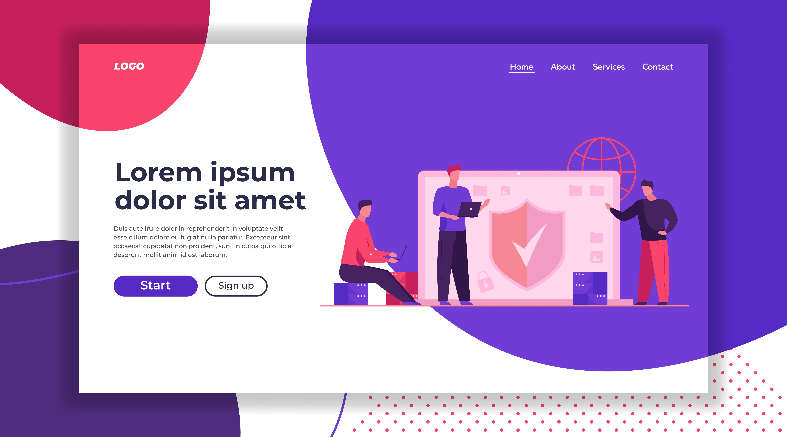

Ideias para atrações musicais em festivais e shows

Introdução:
Oferecer uma experiência VIP em eventos é uma estratégia que vai além de simplesmente proporcionar benefícios adicionais aos convidados. É uma forma de tornar o evento ainda mais especial e exclusivo, garantindo que os participantes se sintam valorizados e importantes. Afinal, a experiência VIP visa elevar o nível do encontro, proporcionando momentos de luxo, conforto e atenção personalizada.
Para alcançar esse objetivo, é crucial realizar um planejamento minucioso, considerando cada detalhe da experiência VIP. A primeira etapa é identificar os convidados que receberão esse tratamento especial, realizando uma segmentação estratégica. Clientes VIP, patrocinadores, parceiros-chave e personalidades relevantes para o evento devem ser identificados para garantir que cada grupo receba benefícios e atenção adequados.
A comunicação também desempenha um papel essencial na criação da experiência VIP. Desde o início, é importante manter uma comunicação personalizada e antecipada com os convidados selecionados, informando sobre os benefícios exclusivos que receberão durante o evento. Essa comunicação pode ser feita por meio de convites personalizados, mensagens de boas-vindas ou até mesmo um aplicativo do evento dedicado aos participantes VIP.
Outro aspecto crucial é o cuidado com a logística e o atendimento durante o evento. É fundamental garantir que os participantes VIP tenham acesso facilitado e exclusivo às áreas do evento, como estacionamento reservado, check-in prioritário e acesso a lounges exclusivos. Além disso, é importante disponibilizar uma equipe dedicada para atender e acompanhar os convidados VIP, garantindo que suas necessidades sejam prontamente atendidas.
A personalização é um elemento chave na criação de uma experiência VIP inesquecível. Oferecer brindes personalizados, cardápios exclusivos e experiências únicas durante o evento são maneiras eficazes de fazer com que os convidados se sintam especiais e valorizados. Além disso, criar momentos de interação com artistas, palestrantes ou líderes do evento também pode agregar um toque exclusivo à experiência VIP.
Outra estratégia poderosa é proporcionar benefícios de longo prazo aos convidados VIP, como acesso a conteúdos exclusivos, descontos em eventos futuros ou programas de fidelidade. Isso fortalece o relacionamento com os participantes e os incentiva a retornar para futuras edições do evento.
oferecer uma experiência VIP em eventos é uma forma eficaz de elevar o nível do encontro, cativar os participantes e deixar uma impressão memorável. Para isso, é fundamental realizar um planejamento cuidadoso, segmentar estrategicamente os convidados, proporcionar uma comunicação personalizada, cuidar da logística e atendimento durante o evento, além de criar momentos de personalização e interação exclusivos. Ao adotar essas dicas, é possível criar uma experiência VIP inesquecível que deixará uma marca positiva nos participantes e fortalecerá o vínculo com o evento em longo prazo.
1. Segmentação do Público:
A segmentação do público é um passo essencial na criação de uma experiência VIP de sucesso em eventos. Antes de iniciar o planejamento, é fundamental entender claramente o público-alvo do evento e identificar quais convidados merecem receber tratamento VIP. Essa segmentação permitirá personalizar a experiência de acordo com as necessidades, interesses e expectativas específicas de cada grupo, garantindo que as ações VIP sejam direcionadas às pessoas certas.
Para segmentar o público, é necessário analisar cuidadosamente os objetivos do evento e as pessoas que têm um papel estratégico em seu sucesso. Isso pode incluir clientes-chave que são fundamentais para o crescimento do negócio, parceiros e patrocinadores que têm um papel significativo na realização do evento, investidores em potencial que podem impulsionar o crescimento da empresa ou personalidades influentes que trarão visibilidade e prestígio ao encontro.
Uma vez que os grupos-alvo tenham sido identificados, é importante compreender suas preferências e expectativas para oferecer uma experiência VIP verdadeiramente personalizada. Isso pode ser feito por meio de pesquisas de satisfação, entrevistas individuais ou análise de dados de eventos anteriores. Entender o que cada grupo valoriza e espera da experiência VIP ajudará a criar ações e benefícios que realmente cativem e encantem os convidados.
Uma das formas de oferecer uma experiência VIP é proporcionar acesso exclusivo a atividades e benefícios que não estão disponíveis para o público geral. Isso pode incluir meet and greets com palestrantes ou artistas, sessões de networking com líderes da indústria, acesso a áreas restritas, experiências personalizadas, brindes exclusivos e serviços de concierge durante o evento.
Além disso, é importante garantir que a experiência VIP seja consistente desde o momento do convite até o encerramento do evento. Isso significa fornecer um atendimento de alta qualidade e uma comunicação personalizada ao longo de todo o processo. Os convidados VIP devem se sentir valorizados e especiais desde o primeiro contato até o momento em que deixam o evento.
Outra estratégia importante é criar momentos de conexão e networking exclusivos para os convidados VIP. Isso pode incluir sessões de discussão em grupos reduzidos, almoços ou jantares exclusivos com palestrantes ou líderes de destaque, ou até mesmo eventos privados para os convidados VIP interagirem entre si.
Por fim, é fundamental solicitar feedback dos convidados VIP após o evento para entender o que funcionou bem e o que pode ser aprimorado na próxima edição. Ouvir as opiniões e sugestões dos participantes ajudará a aperfeiçoar a experiência VIP para futuros eventos e fortalecerá o relacionamento com esses convidados especiais.
Em resumo, a segmentação do público e a personalização da experiência são elementos essenciais para criar uma experiência VIP inesquecível em eventos. Compreender as expectativas dos grupos-alvo, oferecer benefícios exclusivos e garantir uma experiência de alta qualidade desde o convite até o encerramento são estratégias fundamentais para cativar e fidelizar os convidados VIP. Ao criar momentos de conexão e interação exclusivos, é possível proporcionar uma experiência verdadeiramente única e diferenciada, deixando uma impressão memorável em cada participante. A busca contínua pelo aperfeiçoamento e o foco no atendimento ao cliente são chaves para o sucesso da experiência VIP em eventos.
2. Comunicação Antecipada:
A comunicação antecipada é uma etapa essencial para criar uma experiência VIP de sucesso em eventos. Ao convidar os participantes VIPs, é fundamental destacar o tratamento especial que eles receberão e os benefícios exclusivos reservados para esse grupo seleto. A comunicação prévia cria uma sensação de exclusividade e importância, aumentando o engajamento dos convidados e gerando expectativa positiva em relação ao evento.
Ao enviar os convites para os convidados VIPs, certifique-se de que a comunicação seja personalizada e direcionada. Explique claramente quais são os benefícios e vantagens que eles terão durante o evento, como acesso a áreas restritas, sessões privadas com palestrantes renomados, encontros exclusivos com artistas ou líderes da indústria, entre outras experiências diferenciadas.
Além disso, é importante fornecer informações detalhadas sobre a programação do evento e como os convidados VIPs podem participar de cada atividade especial. Isso inclui orientações sobre horários, locais e quaisquer requisitos específicos para acessar as áreas restritas ou participar das sessões privadas.
A comunicação antecipada também pode ser uma oportunidade para coletar informações adicionais dos convidados VIPs. Por exemplo, você pode perguntar sobre suas preferências alimentares para garantir que refeições personalizadas sejam oferecidas durante o evento. Além disso, pedir feedback sobre atividades de interesse ou temas de palestras que gostariam de ver abordados pode ajudar a personalizar ainda mais a experiência VIP.
Uma abordagem eficaz é criar uma página dedicada no site do evento ou um aplicativo exclusivo para os convidados VIPs. Nessa plataforma, você pode disponibilizar informações adicionais, programação detalhada, perfis dos palestrantes ou artistas e qualquer outra informação relevante. Além disso, essa página pode servir como um canal de comunicação direta com os convidados VIPs, permitindo que eles façam perguntas, enviem suas preferências e interajam com outros participantes VIPs.
Não subestime o poder das redes sociais na comunicação antecipada com os convidados VIPs. Utilize as mídias sociais para criar teasers e publicações exclusivas que destaquem os benefícios de ser um convidado VIP e gerem interesse e curiosidade. Além disso, você pode criar um grupo privado para os convidados VIPs interagirem entre si antes do evento, criando uma comunidade exclusiva e fortalecendo o relacionamento entre eles.
Por fim, lembre-se de estar disponível para esclarecer dúvidas e oferecer suporte personalizado aos convidados VIPs. Responder prontamente a e-mails ou mensagens e demonstrar atenção individualizada reforçará o tratamento especial que eles podem esperar durante o evento.
a comunicação antecipada é fundamental para criar expectativa e engajamento dos convidados VIPs. Ao destacar os benefícios exclusivos e fornecer informações detalhadas sobre a experiência VIP, você cria uma sensação de exclusividade e importância para esse grupo seleto. O uso de plataformas dedicadas, redes sociais e o fornecimento de suporte personalizado são estratégias eficazes para garantir que os convidados VIPs se sintam valorizados e entusiasmados com a experiência única que terão no evento.
A comunicação prévia ajuda a criar expectativa e aumenta o engajamento dos convidados.
3. Acesso a Áreas Exclusivas:
Oferecer áreas exclusivas e bem decoradas é um dos pilares fundamentais para proporcionar uma experiência VIP de alto nível em eventos. Esses espaços reservados são projetados para criar um ambiente luxuoso, confortável e acolhedor, onde os convidados VIPs possam desfrutar de momentos únicos e memoráveis durante o evento. A seguir, vamos explorar de forma detalhada e abrangente como planejar e executar essas áreas VIPs para garantir a satisfação e o encantamento dos participantes mais importantes.
Planejamento do Layout: Antes de definir as áreas VIPs, é crucial ter um planejamento detalhado do layout do evento. Identifique os espaços mais estratégicos e privilegiados, como próximos ao palco ou com vistas panorâmicas. Considere também a logística do evento, para que as áreas VIPs sejam facilmente acessíveis e integradas ao restante da programação. Lembre-se de que esses espaços devem permitir a interação dos convidados VIPs entre si e com os palestrantes, artistas ou anfitriões do evento.
Decoração Sofisticada: A decoração das áreas VIPs deve estar alinhada com a identidade visual do evento e transmitir uma sensação de luxo e exclusividade. Utilize móveis confortáveis, tecidos de qualidade, iluminação adequada e elementos decorativos que reflitam o tema ou conceito do encontro. Flores frescas, obras de arte e detalhes personalizados são ótimas opções para criar uma atmosfera sofisticada e acolhedora.
Lounges Confortáveis: Crie lounges espaçosos e confortáveis para os convidados VIPs relaxarem entre as atividades do evento. Ofereça assentos acolchoados, sofás, poltronas e mesas de apoio. Adicione toques de elegância, como almofadas decorativas e mantas aconchegantes. Esses espaços são ideais para momentos de networking, descanso e interação social em um ambiente descontraído e luxuoso.
Serviço de Catering Exclusivo: O serviço de catering nas áreas VIPs deve ser de altíssima qualidade, com opções gourmet e bebidas premium. Ofereça um cardápio variado, com opções para diferentes preferências alimentares. Considere incluir estações de comida ao vivo, onde os convidados possam apreciar pratos preparados na hora. Além disso, garanta que haja uma equipe de garçons dedicada a atender as demandas dos convidados VIPs.
Equipe de Apoio: É essencial ter uma equipe de apoio treinada e dedicada exclusivamente aos convidados VIPs. Essa equipe deve estar disponível para atender às necessidades dos participantes em tempo integral, oferecendo suporte personalizado e solucionando qualquer questão que possa surgir. A equipe de apoio também pode auxiliar na orientação dos convidados VIPs pelo evento e garantir que eles desfrutem de todas as vantagens reservadas a eles.
Sinalização e Identificação: As áreas VIPs devem ser claramente sinalizadas e identificadas para que os convidados possam facilmente localizá-las. Utilize placas, banners ou elementos visuais que destaquem esses espaços exclusivos. Além disso, disponibilize pulseiras, crachás ou outros itens de identificação que identifiquem os convidados VIPs, permitindo que eles sejam reconhecidos e recebam o tratamento especial em todos os momentos do evento.
Atividades Exclusivas: Além de proporcionar um ambiente confortável e luxuoso, ofereça atividades exclusivas nas áreas VIPs para tornar a experiência ainda mais memorável. Isso pode incluir sessões privadas com palestrantes ou artistas, workshops exclusivos, demonstrações especiais ou outras experiências únicas que não estão disponíveis para os demais participantes do evento.
Momentos de Interação: Promova momentos de interação entre os convidados VIPs e personalidades importantes do evento. Isso pode ser feito por meio de encontros pré-agendados, meet and greets, sessões de perguntas e respostas ou atividades de networking específicas para esse grupo seleto. Essas oportunidades de conexão são valiosas e fortalecem os laços entre os convidados VIPs e o propósito do evento.
criar áreas VIPs exclusivas e bem decoradas é uma estratégia fundamental para oferecer uma experiência VIP inesquecível em eventos. O planejamento cuidadoso do layout, a decoração sofisticada, os lounges confortáveis, o serviço de catering de alta qualidade, a equipe de apoio dedicada, a sinalização adequada, as atividades exclusivas e os momentos de interação são elementos essenciais para garantir que os convidados VIPs se sintam valorizados, especiais e imersos em uma atmosfera de luxo e atenção personalizada. Ao proporcionar uma experiência VIP única e memorável, o evento conquistará a admiração e a fidelidade desses participantes importantes, contribuindo para o sucesso e a reputação positiva do encontro como um todo.
4. Serviço de Concierge:
Ofereça um serviço de concierge dedicado aos convidados VIP. Essa equipe estará disponível para atender solicitações especiais, fornecer informações sobre o evento e auxiliar em qualquer necessidade que surja.
O serviço de concierge cria uma experiência personalizada e demonstra cuidado com o bem-estar dos convidados.
5. Brindes e Mimos Especiais:
Presenteie os convidados VIP com brindes exclusivos e personalizados, como kits de boas-vindas, produtos de alta qualidade ou itens colecionáveis relacionados ao evento.
Os brindes especiais reforçam a valorização dos convidados VIP e proporcionam uma lembrança duradoura do evento.
6. Meet and Greet:
Ofereça oportunidades de meet and greet com palestrantes, artistas ou personalidades do evento. Esses encontros exclusivos permitem que os convidados VIP interajam de forma mais próxima com pessoas de destaque no evento.
O meet and greet cria experiências únicas e inesquecíveis para os convidados VIP.
7. Serviço de Catering Premium:
Ofereça um serviço de catering premium com alimentos e bebidas de alta qualidade. Considere opções como um buffet gourmet, pratos especiais preparados por chefs renomados ou degustações exclusivas de vinhos e coquetéis.
A experiência gastronômica é um dos aspectos mais importantes da experiência VIP.
8. Prioridade nas Atividades do Evento:
Permita que os convidados VIP tenham prioridade no acesso a palestras, workshops ou atividades especiais. Isso garante que eles possam participar das ações de maior interesse com conforto e exclusividade.
Oferecer lugares reservados ou filas prioritárias é uma forma de valorizar os convidados VIP.
9. Experiências Memoráveis:
Crie experiências exclusivas e memoráveis para os convidados VIP, como passeios turísticos personalizados, workshops privados, experiências culturais ou atividades relacionadas ao tema do evento.
Essas experiências adicionais contribuem para a satisfação e fidelização dos convidados VIP.
10. Acompanhamento Pós-Evento:
Mantenha contato com os convidados VIP após o evento, enviando agradecimentos personalizados, resumos do evento ou convites para futuras ocasiões especiais.
O acompanhamento pós-evento fortalece o relacionamento com os convidados e demonstra interesse contínuo em sua satisfação.
Ao seguir essas dicas, é possível criar uma experiência VIP marcante que eleve o nível do seu evento, tornando-o exclusivo, inesquecível e garantindo a satisfação e fidelização dos convidados mais importantes. O cuidado com os detalhes e o foco em oferecer um tratamento especial são fundamentais para criar uma atmosfera única e diferenciada, que deixará uma impressão positiva e duradoura em todos os participantes.
conclusão
ferecer uma experiência VIP em eventos é uma estratégia poderosa para elevar o nível do encontro, cativar os participantes e criar uma impressão memorável. Para garantir o sucesso dessa experiência, é essencial um planejamento minucioso, considerando a segmentação do público-alvo, uma comunicação antecipada e personalizada, o cuidado com a logística e atendimento durante o evento, além de momentos de personalização e interação exclusivos.
Ao segmentar estrategicamente os convidados VIP e entender suas preferências, é possível proporcionar benefícios e atividades específicas que realmente cativem e valorizem esses participantes. A comunicação antecipada destaca os benefícios exclusivos, cria expectativa e gera engajamento, enquanto o acesso a áreas exclusivas, a oferta de brindes especiais, o serviço de concierge e as experiências memoráveis demonstram cuidado com o bem-estar e a satisfação dos convidados VIP.
A excelência na execução de áreas VIP bem decoradas, serviço de catering premium e momentos de interação com personalidades importantes do evento adicionam um toque luxuoso e exclusivo à experiência. Além disso, o acompanhamento pós-evento fortalece o relacionamento com os convidados e reforça o interesse contínuo em sua satisfação.
Por fim, a busca contínua pela excelência e o foco no atendimento ao cliente são fundamentais para o sucesso da experiência VIP em eventos. Ao adotar essas práticas, o evento se destacará pela qualidade e diferencial oferecidos, deixando uma marca positiva nos participantes e fortalecendo o vínculo com o evento em longo prazo.